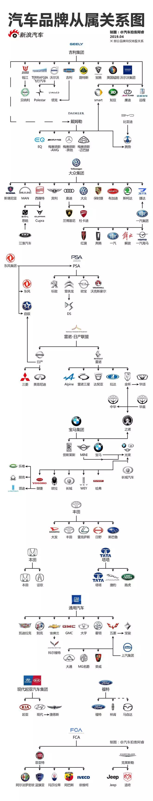

1、大众集团
大众汽车集团成立于1938年，总部位于德国沃尔夫斯堡，是欧洲最大的汽车公司，也是世界汽车行业最具实力的跨国公司之一。
2、通用集团
通用汽车公司成立于1908年9月16日，旗下品牌包括雪佛兰、别克、凯迪拉克、宝骏、欧宝以及五菱等。
3、丰田集团
丰田是目前全世界排名第一的汽车生产公司，是第一个达到年产量千万台以上的车厂，2016年全球100大最有价值品牌排第5。丰田作为日本两大汽车厂商之一，2008年超越通用汽车集团，成为世界第一大汽车制造商。
4、宝马集团
宝马是享誉世界的豪华汽车品牌，前身竟然是飞机工厂，胡润排行榜评为�土豪车主�最多的是宝马。
5、雷诺日产联盟
雷诺日产结盟于1999年3月27日，2010年4月戴姆勒公司又与雷诺日产联盟宣布建立战略联盟。
6、吉利集团
沃尔沃是中国品牌了，2010年吉利控股集团正式完成对福特汽车公司旗下沃尔沃轿车的全部股权收购，从此这个号称世界最安全的轿车品牌正式开始被汉化。
7、菲亚特集团
菲亚特是世界十大汽车公司之一，始建于1899年7月。菲亚特旗下的豪车真的是，随随便便拉出一个品牌来都是小编伤不起的。克莱斯勒、法拉利、玛莎拉蒂、JEEP这些品牌汽车都是备受成功男士们追捧的。意大利的车型设计，具有贵族浪漫气质，跑车领域的领头羊，不少二代们也都争相坐拥。
8、塔塔集团
2008年塔塔汽车发布世界上最便宜的小车，塔塔Nano人民车，从福特汽车收购了捷豹路虎品牌，塔塔化工收购了美国通用化工。塔塔在汽车领域确实不能与别的汽车集团相比，但是塔塔集团本身的实力，小编真是要被吓尿了。塔塔是印度企业，但是58%的业务来自海外市场，涉及的领域也是众多，旗下拥有100多家独立运营公司，其中31家上市公司。
9、PSA集团
标志雪铁龙集团是一家法国私营汽车制造公司，由标致汽车公司拥有，旗下拥有标致和雪铁龙两大汽车品牌。是仅次于德国大众汽车的欧洲第二大汽车制造商。标致在中国市场陆续和东风集团、长安集团合作。
10、福特集团
福特汽车公司是世界上最大的汽车生产商之一，成立于1903年，旗下拥有林肯和福特两大品牌，林肯汽车是享誉世界的高端豪华车品牌。
11、戴姆勒集团
戴姆勒股份公司的总部位于德国斯图加特，是全球最大的商用车制造商，全球第二大豪华车生产商、第二大卡车生产商（小编这里没有列卡车系列）。值得一提的是2013年迈巴赫由于业绩问题停止生产，但是紧接着2014年全新推出新款梅赛德斯-迈巴赫。
12、现代起亚集团
现代起亚集团的背景较为复杂。现代汽车公司是韩国最大的汽车企业，是世界20家最大汽车公司之一。起亚汽车公司是韩国最早的汽车制造商，但是在1997年发生的亚洲金融风暴引发的韩国金融危机中，起亚汽车的投资失去可偿还能力，濒临破产后由政府出面，指令现代收购起亚公司，从此现代和起亚隶属一个集团。但是在市场上，起亚和现代以两个公司的方式独立运行操作。
13、本田集团
本田是世界上最大的摩托车生产厂家，汽车产量和规模也名列世界十大汽车厂家之列。小编知道本田也是从本田摩托车开始的。
